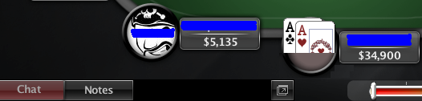

Actions
The main code sections of Open-PPL consist of when-conditions with actions. They look e.g. like this:
##f$preflop##
// Openraising on the button
WHEN (Raises = 0 and Calls = 0 and StillToAct = 2)
// Normal openraises
WHEN ((Hand$AA) or (Hand$KK)...) RaiseTo 3 FORCE
// Pushing according to Sklanky
WHEN (StackSize < 20 and ((Hand$ ...) OR ...)) RaiseMax FORCE
OpenPPL provides 3 kinds of actions:
Fixed Actions
Examples look like
BetMax FORCE
RaiseMax FORCE
Allin FORCE // synonym for BetMax and RaiseMax, but no standard PPL
BetPot FORCE
RaisePot FORCE
BetHalfPot FORCE
RaiseHalfPot FORCE
Bet FORCE // min-bet (fixed limit)
Raise FORCE // min-raise (fixed limit)
Call FORCE
Check FORCE
Folf FORCE
Beep FORCE // beep, but don#t act
Contrary to standard PPL OpenPPL does not distinguish bets and raises. OpenHoldem treats them exactly the same way.
Please note: SitOut is no longer a supported action. In our opinion it is beneficial to separate playing logic and hopper logic. Therefore OpenHoldem provides some hopper-functionality, especially the functions f$sitin, f$sitout, f$leave and f$close.
Please also note: fixed actions are functions from a technical point of view, therefore they are case-sensitive.
Actions With Fixed Betsize
Examples look like
or
RaiseTo specifies your final betsize, RiaseBy specifies the amount you want to add to the aggressors bet-amount.
Actions With Relative Betsize
Examples look like
Here the betsize gets measured as a certain percentage of the pot (pot = common pot + all players bets + the amount to call). Potsized bets are always RaiseBy.
Using Expressions For The Bet-Amount
Lets assume you want to raise to 3 bb in an unraised pot, plus 1 bb for each caller. With standard PPL this would result in clumsy code. But with OpenPPL you can simply write:
WHEN (Raises = 0) RaiseTo (3 + Calls) FORCE
If you want you could take this to extremes and write good code like the following:
##f$MyFavouriteBetsizeForDryBoards##
...
WHEN (...) RaiseTo MyFavouriteBetsizeForDryBoards FORCE
Being strict: using “FORCE”
Every action in OpenPPL has to be terminated by the keyword “FORCE”. For standard PPL this keyword was optional. If you left it out, it meant, that the bot continued to evaluate and finally fell back to the default logic. We deviated from that behaviour, as:
-
in our opinion it does not make any sense to specify actions that have no effect.
-
OpenPPL does not provide a default bot.
Quickfolding bad hands
Most poker-sites provide pre-action-buttons to act before it is your turn. Especially useful is the prefold-button that makes it possible to click bad hands away and forget about them. Being able to click this button with your bot has at least two positive effect: more human-like behaviour and playing more hands per hour due to faster actions . Nothing could be more easy:
##f$prefold##
WHEN AmountToCall > 0 AND (hand$32 OR hand$43 OR ...) Return True FORCE
Be aware of potentially unstable game-states!
Please note:
-
prefold gets evaluated when it is not your turn. Therefore it might happen that OpenHoldem takes a screenshot, evaluates and acts while the casino updates its table-display and the game-state is unstable. “Garbage in — garbage out” will happen. Now lets assume you have some super-nitty bot:
##f$prefold##
WHEN (NOT ((Hand$AA) OR (Hand$KK))) Fold FORCE

”Fold when I don’t have a good hand”. But here your good hand can not get recognized because your aces get only displayed partially. Your bot would fold pocket aces! To avoid problems like that it is recommend to code more fail-safe like in the first example: “Fold when I have a bad hand”. It won’t hurt that much if that command failed and worked only on the next heart-beat-cycle.
-
There are even more consequences of potentially unstable frames: OpenPPL does its main calculations when it is your turn. Especially some more complex symbols which depend on the history of the game get updated only when we have stable frames to guarantee their correctness — RaisesSinceLastPlay or LastCallerPosition are examples. As a consequence these symbols will simply be undefined before your first action preflop. Therefore it is recommended to be extra careful about the GIGO-principle and stick to the most basic symbols only. But this is not too hard for prefold, isn’t it?
Backup actions
It may happen, that a certain action is not available, e.g. you might want to raise by half the pot, but this is currently not possible, e.g. because your opponent made a large raise and half-pot would be less than the minimum. In such situations OpenPPL behaves in the following ways: